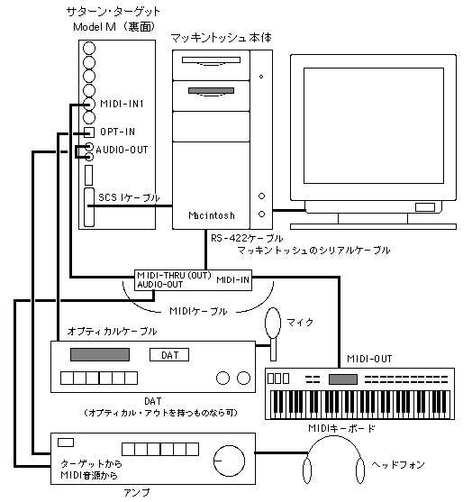

★SGL User's Manual
★SOUND TUTORIAL
★SGL User's Manual
★SOUND TUTORIAL
本章ではセガサウンドツールを使用するための、ハードウェアの接続方法について説明します。
サウンドの制作にはマッキントッシュが必要です。
セガサウンドツールを中心に機器構成を考えると、下図のようになります。
AUDIOMEDIA II などの市販ツールを使用すると若干異なった接続になりますが本章では省きます。
図1-1 セガサウンドツール使用時の機器構成

★SGL User's Manual
★SOUND TUTORIAL